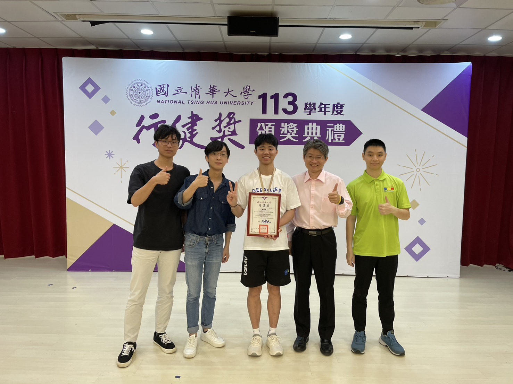
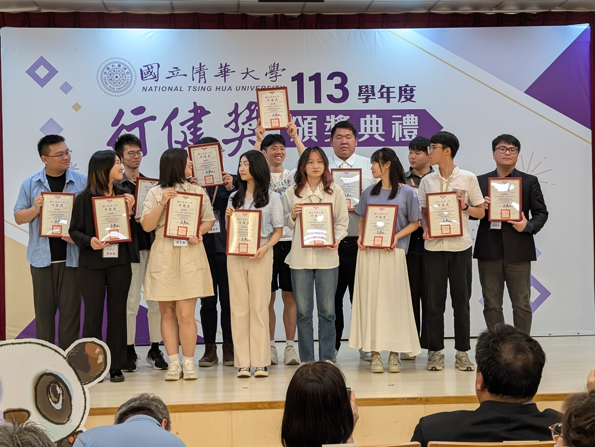
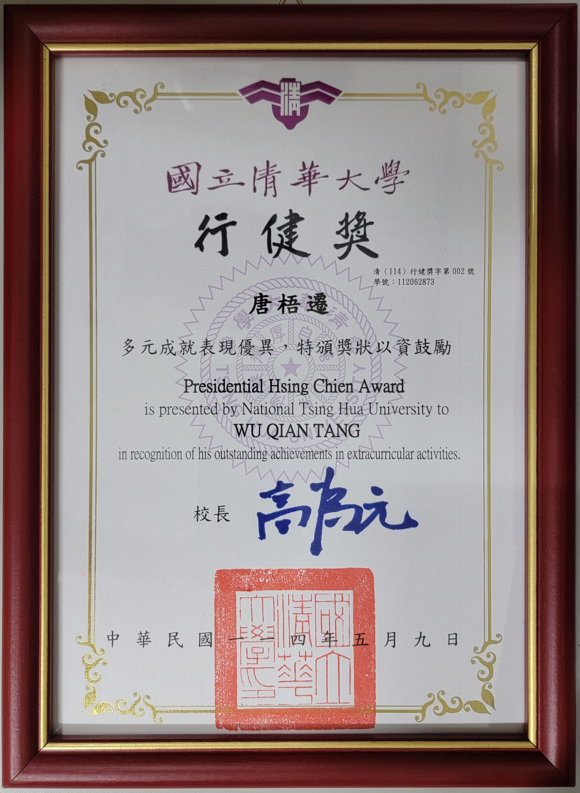
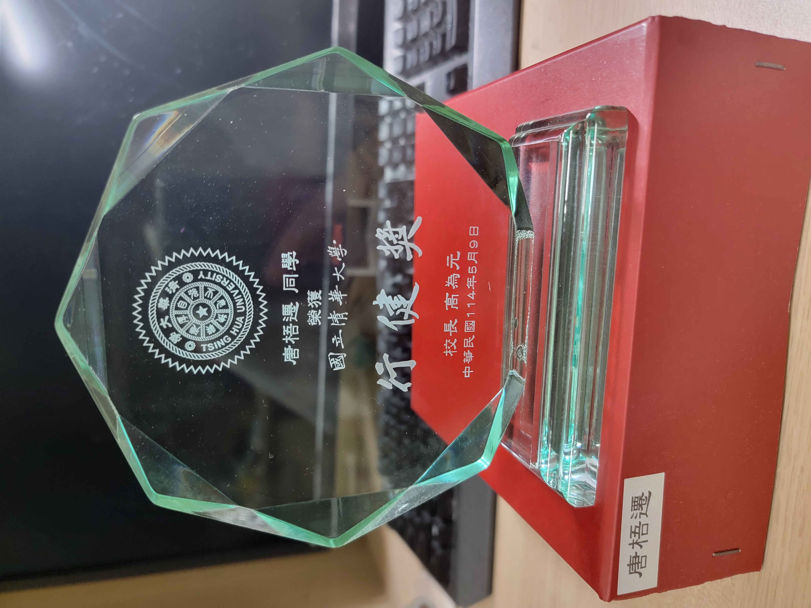

Awards & Honors · May 2025
Presidential Hsing Chien Award
National Tsing Hua University · One of 13 university-wide recipients
Photos2




Certificates1


Trophies1


Awards & Honors · May 2025
National Tsing Hua University · One of 13 university-wide recipients



